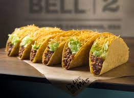

My Taco Recipe

crunchy and greasy
recipie is easy to make anyone and their grandma can do it. everyone loves tacos
great choice of custimization
ingridents
- ground beef
- corn shell
- lettus
steps
- chop up lettus
- cook beef in pan until brown dont want to over cook
- heat shells in microwave (optional)